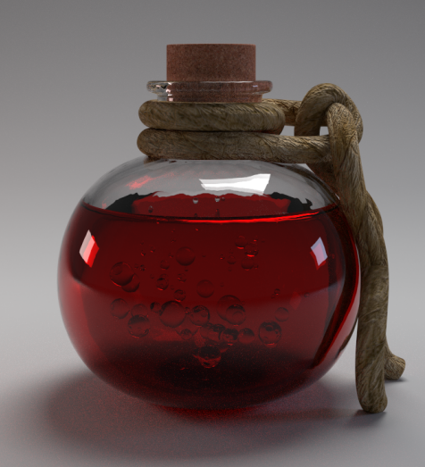

Potion of Healing

This is by far my most popular potion. I have to make sure that I always have plenty in stock for all of the wandering adventures that pass through my shop. It is also quite easy to make,
but sourcing the ingredients can prove difficult.
Ingredients
- Grains of Paradise
- Peppermint
- Mercury
- Dead Sea Salt
- Lemon Zest
- Campfire Ash
Instructions
- Grind your Grains of Paradise to a fine powder with a mortar and pestle, or you could cast make flour if you are of sufficient skill level.
- Crush up the peppermint and put it in your potion receptacle, as well as the lemon zest.
- Add the Campfire Ash to your Grains of Paradise and mix until uniform.
- This is the most important step.Pour the Mercury into the potion bottle with the crushed peppermint and lemon zest. Add 4 shakes of Dead Sea Salt and shake the bottle thoroughly, while uttering
the incantation "vos Cant occidere me mercurio". This is the difference between a potion of healing and mercury poisoning.
- Add the Grains of Paradise and Campfire Ash to this bottle, then heat to boiling over a fire, or better yet if you have the skill use burning hands.
- Once it begins to boil remove it from its heat source and let it cool naturally over the next hour or so.
Just like that, you have your very own potion of healing! Potency will be affected by purity of ingredients and your own skill in alchemy, but in due time you will be able to make a potion that can heal the most grevious of wounds.
Return to main page